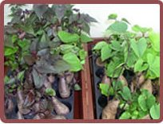
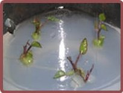
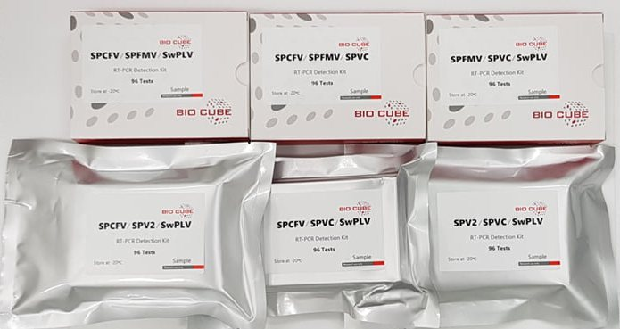

왜 조직배양인가
고구마는 씨앗이 아니라 줄기나 싹을 번식시키는 작물입니다.
이 때문에 바이러스에 한번 감염되면 다음 세대로 그대로 이어져 해마다 수확량과 품질이 떨어질 수 있습니다. 조직배양기술은 이 문제를 해결하는 방법입니다.
조직배양기술이란?
식물의 세포나 조직을 무균 상태의 폐쇄된 공간에서, 생장할 수 있는 영양분과 환경을 갖춘 상태로 배양하여 식물체를 생산하는 기술입니다.
더고구마의 조직배양 과정
생장점 배양으로 무병원주를 얻고, 정단조직과 마디 배양으로 증식합니다.
생장점 배양에 의한 무병원주



무병원주 증식 — 정단조직 및 마디 배양



이후 생장점 적출 및 배양을 거쳐, 바이러스 진단을 통한 무병묘 검정을 진행합니다.
고구마 바이러스 다중 진단 키트
서울시립대학교에서 개발한 RT-PCR 진단 키트로 무병묘를 검정합니다.

| RT-PCR Detection Kit (96 Tests) | 대상 바이러스 |
|---|---|
| Kit 1 | SPCFV / SPFMV / SwPLV |
| Kit 2 | SPCFV / SPFMV / SPVC |
| Kit 3 | SPFMV / SPVC / SwPLV |
| Kit 4 | SPCFV / SPV2 / SwPLV |
| Kit 5 | SPCFV / SPVC / SwPLV |
| Kit 6 | SPV2 / SPVC / SwPLV |